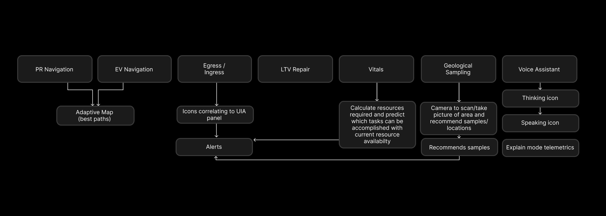
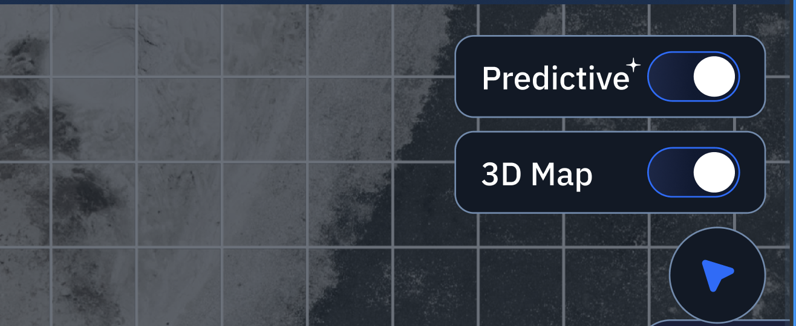
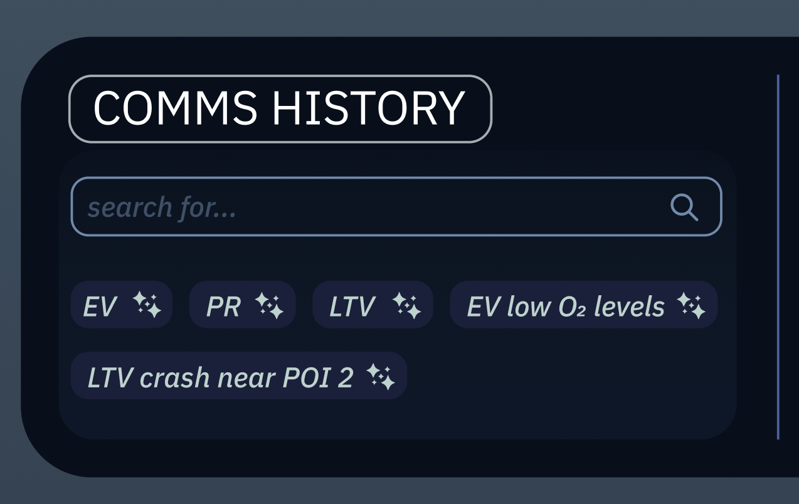

ANUSHKA PARIKHgraphic designer
Pursuing a BFA in Graphic Design and a Concentration in
Computation at the Rhode Island School of Design. Her work
largely revolves around interaction, accessible design,
research, & brand identities.
Computation at the Rhode Island School of Design. Her work
largely revolves around interaction, accessible design,
research, & brand identities.
NASA S.U.I.T.S
ui/ux design
In → 2025-26 [9 months]
Role → UI/UX Designer, Design Systems
With → Anika Gupta, Ava Maghsoodlou, Rony Gou, Samee Kwak, and Sandy Tsang (and many more designers!)
Role → UI/UX Designer, Design Systems
With → Anika Gupta, Ava Maghsoodlou, Rony Gou, Samee Kwak, and Sandy Tsang (and many more designers!)
OVERVIEW
NASA S.U.I.T.S.
NASA SUITS (Spacesuit User Interface Technologies for Students) is an annual design challenge where student teams prototype UI solutions for future lunar missions. We designed a dual-monitor interface to assist mission controllers in monitoring astronaut and rover activity on the Moon. The left screen showed tasks, maps, pins, and controls; the right focused on telemetry and live video feeds.
MY ROLE
UI/UX Designer
My role was dedicated to the new addition of AI automation within the S.U.I.T.S. interface systems. Some features included, a voice assistant, an alternate pathway calculation system, a log system of conversations with the voice assistant, and calculation to redirect the EV when telemetry shows low battery/warning.

PROJECT OVERVIEWS
A balance between accessibility and dense information.
The AI integration into the user interface had applications across multiple areas including
voice control, attention direction to determine the best path for the EV, information
tracking, warning notifications, and EV to PR data translation that records conversations
with the AI assistant as well.
THE OUTCOME
AI Voice Assistant
The voice assistant was cleverly designed as an icon that visually reacts in modes of
listeing, thinking, and responding back in a pulse like feedback animation.
THE OUTCOME
Attention Direction
Attention Direction was designed to redirect the EV in case of a warning
that impacted distance capacity for the vehicle such as low battery.
THE OUTCOME
Predictive Telemetry
Predictive Telemetry is a tool that can be toggled to reveal the telemetry of the EV or PR
when on an ongoing route. This is a helpful tool to be aware of battery life, oxygen level,
and cabin pressure.
THE OUTCOME
Communication History
Communication History was created with the purpose of recording all conversations and
using the AI assistant to quickly categorize and repeat/recall important topics that were
discussed.
PROBLEM CONTEXT
The problem and vision
How do we decide which features of the AI assistant need to be
visually present in the interface and which features stay productively
hidden?
We considered the various features that AI could optimize for travel
and wanted them to visualize as distinguishable AI features.

PROBLEM CONTEXT
Invisible features
The AI assistant had the potential to optimize PR and EV navigations. However,
populating the map with multiple alternate paths could increase the mental load
of the astronauts.
PROBLEM CONTEXT
Visible features
Features like the voice assistant would occupy too much space within the
screen and cover the map. Additionally, there was no extra space on the
task screen, which meant the communication history would have to appear
on the telemetry screen.


WHAT CHANGED?
Optimizing space
To efficiently distinguish AI features from non-AI features, a sparkle-like icon appears
to identify the AI features across the interfaces. Additionally a toggle was mode added
instead of a constant overpopulation of predicitive information for each POI (point of interest).
WHAT CHANGED?
Voice assistant delegation
Considering the enviroment in which the EV and PR would have access to the voice assistant
(a nondisruptive environment which is likely available), the voice assistant would not
serve as a productive tool if all conversations populated into the map screen. Thus
the communication history could be recalled from audio by addressing the voice assistant
meaning that notifications of the audio assistant's answers were no longer necessary.

ITERATION
Reducing unclear signals
The predictive telemetry was not as informative in earlier iterations
due to the worry of space optimization so telemetry notifications that
were predictive were reduced to colored dots. This was difficult for users
to recognize as important or how it directly impacted the user.
It was later decided that predictive telemetry had to be explicitly informative and recognizable as "predictive" which was solved with a toggle and hovering bubble over significant POI's on a path.
It was later decided that predictive telemetry had to be explicitly informative and recognizable as "predictive" which was solved with a toggle and hovering bubble over significant POI's on a path.
ITERATION
Accessibility of communication history
The dedicated space of communication history on the telemetry screen
was incredibly limited and difficult to format in a user-friendly way.
This image displays the initial formatting which we realized through
user testing was difficult to spot and understand the controls of.
It was later understood that having the search bar be more prominent in the design was important to navigating through the communication history. As well as having the tagging system be visibly clear.
It was later understood that having the search bar be more prominent in the design was important to navigating through the communication history. As well as having the tagging system be visibly clear.


TAKEAWAY
Product in travel, health, and task distribution
Through this project, I discovered that product design typically
does not follow one goal. It is a multifaceted collection of goals
that the user must know to have available and accessible to understand.
In previous years, physical limitations challenged the user interfaces we created as astronauts with large gloves and VR interfaces faced an entirely different set of issues. Even in the lack of this challenges, the AI assistant proved to be equally challenging and interesting to incorporate into a dense interface.
In previous years, physical limitations challenged the user interfaces we created as astronauts with large gloves and VR interfaces faced an entirely different set of issues. Even in the lack of this challenges, the AI assistant proved to be equally challenging and interesting to incorporate into a dense interface.
TAKEAWAY
User testing !
Suprisingly, I learned an extensive amount about the interface I was
working on for months through other users who were looking at the first
time. They confirmed some of my worries but also brought upon issues
that I would not have considered to be impactful to the user. For our small team,
we interviewed around 10+ professors and friends which was incredibly helpful
to our final design.
TAKEAWAY
Creativity in a dense interface
Although I expected a restricted amount of creativity within the interface,
I was surprised with how much control I was able to implement into the design.
While staying within the visual system, I found interesting design challenges
such as finding visible spaces for the AI assistant to display!
© Anushka Parikh 2026 [aparik01@risd.edu]